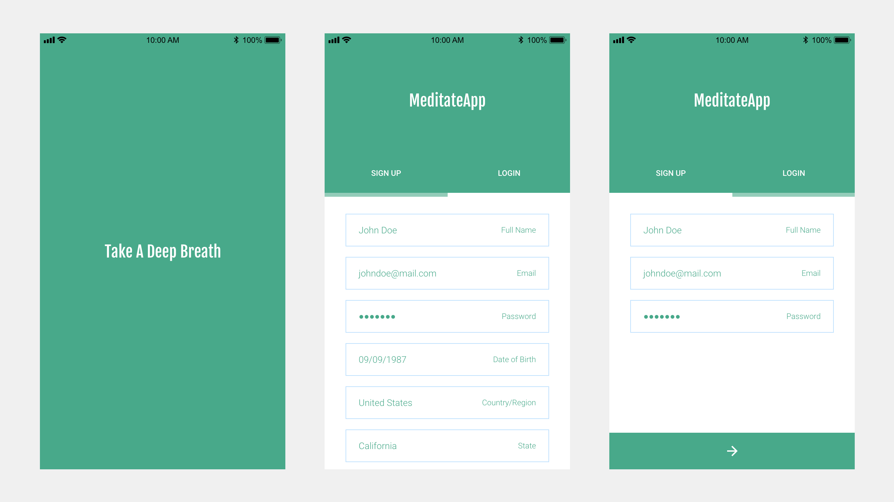
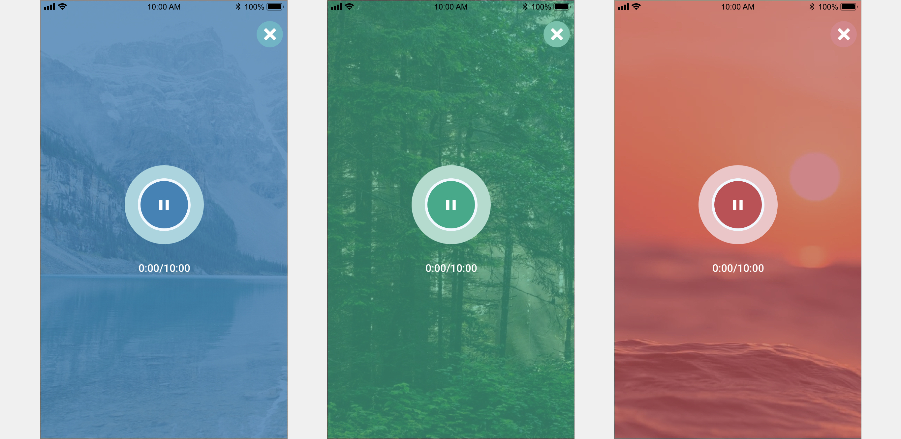
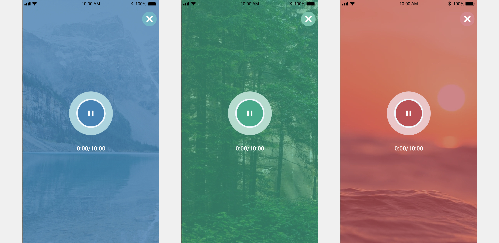
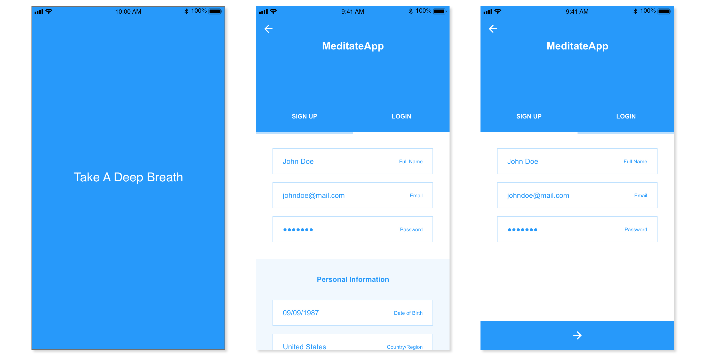
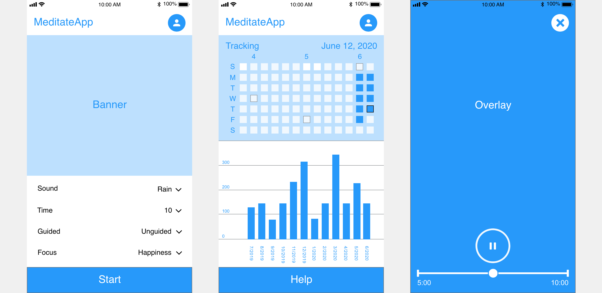

Project Description
MeditateApp is a mobile iOS application for customizable guided or unguided meditations. Required pages include a welcome, sign up, login, home, meditation, and account page. The home page features include a banner, and meditation session settings (sound, voice, time, focus). The meditation page features include a play button, duration wheel, and timer. The account page features include user information (full name, email, password), meditation statistics (total sessions, total minutes, avg. session duration, daily activity), and help button that links to account support.
User Persona
John, 18, is attending University in New York City. While he uses his desktop for studying, John is frequently using his iPhone for social media, listening to podcasts, and mobile gaming. He explains, “I’m still getting adjusted to living in the city and I’m having difficulty finding time to relax with my busy school schedule. I’m constantly using my bullet journal to track progression for my goals and activities. I have some experience meditating, and I often switch between guided and unguided sessions that I find online.” John needs a mobile application that will allow him to easily access customizable meditation sessions, with statistics that pair well with his habit tracking. He’s not interested in new content or constant updates, he simply wants a meditation option that will fit his mood and schedule.
Prototypes
 

Wireframes
 